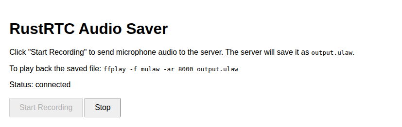

跑通音频接收（audio_saver）：浏览器麦克风 → Audio transceiver → 首个音频 RTP / MediaSample::Audio
先分清这件事：本课是接收并保存，不是音频回声。页面没有远端播放元素，Rust也不把音频送回去。你只开一个浏览器页面，把麦克风（或合成音）送到未改的 audio_saver，再核对服务端是否真的收到了音频样本。
本课约30–40分钟。运行与页面检查10分钟，读接收路径10分钟，证据卡与自测10–20分钟。若你按音频路径跳过了第19课视频回声，可以从第18课直接进入；第19课页面仍在，不要把它的视频结论抄到这里。第3到第6课已经讲过音频SDP、传输和时序，需要时再回看第5课和第6课。唯一成果是一张可以说明“音频成功收到哪一步”的证据卡。
上游固定提交：f1b59bf6e85fa529dc0c8ed94a91e17a00cd8afa。本课不打18课聊天补丁，不改上游原例，不去改 start_echo。start_echo会跳过非视频 transceiver，不能当本课音频路径。
2026-11-27 JST已在云端Linux虚拟机（Ubuntu 24.04.5 LTS，kernel 6.12.113+）、rustc/cargo 1.100.0、Chrome 157.0.8103.50验证通过。使用Chrome合成麦克风和440 Hz测试音，不是真人麦克风，也没有试听保存文件。教学共享电脑上的一次Chrome因WebRTC回环策略未能完成ICE（ICE仍为new，output.ulaw为0字节），那次不能当成接收成功。下面的Windows步骤供你操作，不是Windows成功记录。
上一课：0019 视频回声（可跳过） · 下一课：0021 按对端选择 sip()（rtp_track_event） · 第18课 ACK · 目录 · 本课脱敏验证摘要 · 已执行过的两阶段统计脚本
1. 先跑原例，认准页面与端口
1.1 在全新目录运行
以下命令由你在Windows 11 PowerShell执行。沿用已有Git、Rust、Chrome，不在这一课重配系统环境。目录存在就停止，不切换或覆盖你原来的工程。这里用新目录，避免继承18课的聊天补丁。
$ErrorActionPreference = "Stop"
$root = Join-Path $HOME "rustrtc-0020-audio-saver"
if (Test-Path $root) { throw "目录已存在，请换全新目录名，不要覆盖。" }
git clone https://github.com/restsend/rustrtc.git $root
if ($LASTEXITCODE -ne 0) { throw "克隆失败，停止。" }
Set-Location $root
$sha = "f1b59bf6e85fa529dc0c8ed94a91e17a00cd8afa"
git checkout --detach $sha
if ($LASTEXITCODE -ne 0) { throw "固定提交失败，停止。" }
if ((git rev-parse HEAD).Trim() -ne $sha) { throw "提交不符，停止。" }
cargo +1.100.0 build --example audio_saver
if ($LASTEXITCODE -ne 0) { throw "构建失败，先保留第一条错误。" }
cargo +1.100.0 run --example audio_saver
+1.100.0选中本课通过运行实际用过的工具链。若本机没有这个工具链，先停止并核对本机工具链，不把本课写成安装教程。此提交使用edition 2024；本轮没有测试其他最低Rust版本，不能把某个依赖的最低版本当成整个工程的保证。
云端通过运行也在仓库根目录执行，使用的是同一组命令：cargo +1.100.0 build --example audio_saver退出码为0，随后 cargo +1.100.0 run --example audio_saver。原库有三条 fetch_update 弃用警告，不是本课改了依赖。运行结束后HEAD仍是上述固定提交。终端应出现监听 http://127.0.0.1:3000 的提示。云端本轮实际监听时间为2026-11-27 02:45:10.344068 JST。
必须从仓库根目录启动。根页面由编译期 include_str! 嵌入，只改HTML却不重新编译，不保证浏览器拿到新页面。本课不修改它。output.ulaw也按进程工作目录创建，通常就是仓库根。来源：37–50行。
若3000端口占用，先检查是不是自己先前开的 echo_server、datachannel_chat 或另一个 audio_saver。它们都绑定 127.0.0.1:3000，不能同时跑。关闭自己确认的旧服务再启动，不结束不认识的进程，也不要把聊天页或第19课Echo页误当成本轮页面。
1.2 打开正确的页面
- 打开
http://127.0.0.1:3000/。页面标题应是RustRTC Audio Saver。 - 如果要同时做第4节统计练习，先读第4.1节，在点击前安装统计捕获脚本。
- 点击 Start Recording。允许当前本机页面使用麦克风。云端验证用的是伪造设备和测试音，你本机若用真实麦克风，也只说明采集来源不同，不改变要核对的服务端证据。
- 观察状态区。不要找Local/Remote Video，也不要找第19课的模式下拉或Start Connection。
真实按钮是 Start Recording 和 Stop（初始禁用，connectionState === 'connected' 后启用）。README写成Click “Start”，课里以页面为准。状态文案会从 Status: Idle 走到 Status: Requesting Microphone...、Status: Connecting...，再变成 Status: 加上 connectionState。点Stop后是 Status: Stopped。
页面真实调用的是 getUserMedia({ audio: true, video: false })。没有远端音频元素，也没有页面内getStats，new RTCPeerConnection()没有配置STUN。POST /offer 的请求体只有 { sdp }，没有 type 或 mode。来源：页面采集第47行、85–89行、52–55行。
图1 · 路径示意，不是抓包或耗时图 浏览器 ── HTTP POST /offer、answer ── Rust 浏览器麦克风 → 编码音频 → SRTP上行 → Rust Rust：Audio transceiver → track.recv → 写入 output.ulaw 没有回送，也没有远端播放元素。
2. 用本轮SDP确认对象
2.1 看answer，不猜PT
以下是本轮真实SDP的脱敏截取。[port]是删掉实际端口后的标记，不能把这段当成可部署或可解析的完整SDP。ICE凭证、指纹和候选地址省略了。完整offer还列了其他编码，这里没有假装它们不存在。更完整的摘录见sdp-excerpts.md。
# 本轮offer的相关行，截取且已脱敏
m=audio [port] UDP/TLS/RTP/SAVPF 111 63 9 0 8 13 110 126
a=mid:0
a=sendrecv
a=rtpmap:111 opus/48000/2
a=fmtp:111 minptime=10;useinbandfec=1
a=rtpmap:0 PCMU/8000
# 本轮服务端answer的相关行，截取且已脱敏
m=audio [port] UDP/TLS/RTP/SAVPF 111 0
a=setup:passive
a=mid:0
a=sendrecv
a=rtpmap:111 opus/48000/2
a=fmtp:111 minptime=10;useinbandfec=1
a=rtpmap:0 PCMU/8000
服务端能力声明了PCMU PT 0和OPUS PT 111，见67–88行。那只是“可以协商什么”，不是本轮结果。本轮offer把111放在音频m行最前，answer保留了111和0，双方都有 a=rtpmap:111 opus/48000/2 和 a=fmtp:111 minptime=10;useinbandfec=1。getStats的codec也是 audio/opus、payloadType 111、clockRate 48000。真正发送并首次收到的PT，还要和第4节的首包日志对上：PT: Some(111)。111是这次协商映射，不是规范常量。
answer的m行端口在服务端发出时是9，不是0。按RFC 3264 §6.1，端口为0才表示拒绝该流。浏览器应用后的remoteDescription仍是111/0、opus/48000/2和 a=sendrecv，并把m行端口改成了后来选中的host端口。公开摘录统一写成 [port]。
本轮offer与answer都只有一条 m=audio 行。示例在改 caps.audio 时，没有清空 MediaCapabilities::default() 里的video/application。这次没有多出那些m行，是该次SDP的观察，不能写成“以后也一定不会出现”。
opus/48000/2 里的48000是RTP时钟率，不是每秒48000个包。见第5课、第6课。/2也不证明实际在发立体声：RFC 7587 §7要求sdp里的通道数必须写成2，其“标准单声道会话”例子同样使用 opus/48000/2；是否偏好立体声由fmtp里的 stereo / sprop-stereo 表达。本轮fmtp只有 minptime=10;useinbandfec=1，云端伪造音源也是单声道。
offer和answer的方向都是 a=sendrecv。SDP描述了媒体与方向，不等于已经收到音频。还差路径、首包和文件，见第4节。
3. 读Rust：只收Audio，写入负载，不回送
3.1 只处理Audio transceiver
对照：229–231行里，start_echo对非 MediaKind::Video 的transceiver直接 continue。所以不能把第19课的回声函数讲成音频路径，也不要为本课去改它。
if transceiver.kind() != rustrtc::MediaKind::Video {
continue;
}audio_saver正好相反，只在Audio时进入处理。它找到receiver和track，再在后台循环里 track.recv()。没有创建发送轨道，没有把样本回送出去。下面是方向设置的原文，含作者注释：
if transceiver.kind() == rustrtc::MediaKind::Audio {
// Workaround: rustrtc's create_answer logic seems to flip RecvOnly to SendOnly in SDP.
// We use SendRecv to ensure the Answer contains a=sendrecv (or similar) so the browser sends audio.
info!("Found Audio Transceiver, setting to SendRecv");
transceiver.set_direction(rustrtc::TransceiverDirection::SendRecv);来源：97–102行。库里的 answer_direction 确实把 RecvOnly 映射成 SendOnly，见6900–6906行。这能解释作者为什么写这条注释，但本课没有做RecvOnly对照实验，只把它当作示例作者的workaround说明，不能写成已证实根因。本轮offer和answer都是 a=sendrecv，与设置后的方向一致，仍然不能单独证明“若不设置就会失败”。
图2 · 对象关系示意
PeerConnection
└── Audio transceiver（set_direction(SendRecv)，作者workaround说明）
└── receiver.track()
└── 录音循环：track.recv()
└── 若是 MediaSample::Audio，把 frame.data 写入 output.ulaw
没有 RtpSender，没有回送轨道。
3.2 写入的是负载，文件名可能说谎
接收循环只匹配 MediaSample::Audio，把 frame.data 原样写入 output.ulaw。首个音频样本会打日志 Received first audio packet: {} bytes, PT: {:?}，这里的字节数是 frame.data.len()，也就是负载长度。结束时再打印 Total packets，它计的是 MediaSample::Audio 次数。来源：113–157行。
if let MediaSample::Audio(frame) = sample {
packets_received += 1;
if packets_received == 1 {
info!("Received first audio packet: {} bytes, PT: {:?}", frame.data.len(), frame.payload_type);
}
// Note: If this is OPUS, writing it directly to .ulaw file will result in noise,
// but at least we verify data reception.
if let Err(e) = file.write_all(&frame.data).await {
warn!("Failed to write audio: {}", e);
break;
}
}默认音频路径使用直通depacketizer，把RTP负载放进 AudioFrame.data，并不在这里解成PCM。见25–38行、256–262行、164–184行。因此文件内容跟协商到的PT走：若是PCMU，按μ-law理解才可能说得通；若是Opus，文件名和页面上的 ffplay -f mulaw -ar 8000 都会说谎。作者注释已经写明：直接写成 .ulaw 会是噪音，但能证明收到了数据。
offer处理里会调用两次 create_answer：第一次结果被丢弃，等ICE收集完成后再生成真正返回的answer，见165–169行。同一文件名 output.ulaw 会在新连接里 File::create 截断；并发会话会互相覆盖。验证一次只用一个浏览器会话，停干净再开下一轮。
4. 取得这一个连接的接收证据
4.1 点击前先捕获连接
原页是 let pc = null，不会变成 window.pc；点Stop后引用还会被清空。来源：39–39行、101–105行。要采样getStats，必须在点击 Start Recording 之前安装构造函数捕获。完整表达式见page-getstats.js。先执行这一段：
(() => {
const Orig = window.RTCPeerConnection;
function Wrapped(config) {
const pc = new Orig(config);
window.__rustrtcPcs = window.__rustrtcPcs || [];
window.__rustrtcPcs.push(pc);
return pc;
}
Wrapped.prototype = Orig.prototype;
Object.setPrototypeOf(Wrapped, Orig);
for (const key of Object.getOwnPropertyNames(Orig)) {
if (key === "prototype" || key === "length" || key === "name") continue;
const desc = Object.getOwnPropertyDescriptor(Orig, key);
if (desc) Object.defineProperty(Wrapped, key, desc);
}
window.RTCPeerConnection = Wrapped;
window.__pcHookInstalled = true;
return {
pageHasWindowPc: Object.prototype.hasOwnProperty.call(window, "pc"),
typeofPc: typeof pc
};
})();
本轮此时返回 pageHasWindowPc: false、typeofPc: "undefined"。随后点击Start Recording，等状态变为 Status: connected，再单独执行第二段：
const pcs = window.__rustrtcPcs || [];
const pc = pcs[0];
const report = await pc.getStats();
这里的 pc 是你新定义的Console变量，不是原页公开了window.pc。再采样时执行 await pc.getStats()，不要重复声明这些const。刷新会丢掉捕获脚本，必须重新从第一段开始。找不到连接时，先查是不是安装得太晚。脚本在云端真实Chrome中执行过。Console的手动步骤和PowerShell一样供你本机实践，未冒称Windows实测。
4.2 分层核对：状态、路径、首包、文件
云端通过运行在点击约1秒后，状态已是 Status: connected。页面脚本把 textContent 设为 "Status: " + pc.connectionState，所以看到的不是单独一个 connected。这只证明连接状态，不是已经收到音频。还要看服务端首包日志和非空文件。
本轮服务端日志原文如下。时间戳原来带 Z（UTC），这里同时给出Asia/Tokyo：
2026-11-26T17:47:25.122064Z INFO audio_saver: ICE State changed: Connected
2026-11-26T17:47:25.154334Z INFO audio_saver: Received first audio packet: 105 bytes, PT: Some(111)
2026-11-26T17:47:40.012122Z INFO audio_saver: ICE State changed: Disconnected
2026-11-26T17:47:40.012194Z INFO audio_saver: Audio recording stopped. Total packets: 744
换算为JST：ICE Connected是2026-11-27 02:47:25.122064，首包是2026-11-27 02:47:25.154334 JST，结束计数是02:47:40.012194 JST。ICE Connected紧挨在首包之前。首包负载105字节，PT为 Some(111)，与本轮SDP和codec统计一致。结束时Total packets为744，这是服务端 MediaSample::Audio 计数。
浏览器transport在两次快照中 iceState 和 dtlsState 都是 connected，选中候选对是nominated、succeeded的host UDP：172.30.0.2:59160 → 172.30.0.2:46825。这是该云端虚拟机当次选中的主机地址，不是跨公网保证。页面打开的是 http://127.0.0.1:3000/，但媒体没有走环回地址；HTTP能打开页面，不能证明ICE走环回。页面没有配置STUN，服务端 webrtc() 的 ice_servers 也是空的，不要套用第19课Echo页配置了STUN的说法。服务端没有成功DTLS握手日志，没有补造；DTLS connected来自浏览器transport统计。
同一上行音频SSRC 489390201，与offer里的 a=ssrc:489390201 相同。两次快照为 02:47:34.933 → 02:47:39.945 JST（统计时间戳相隔5012.344 ms）：
| 统计对象 | 字段 | t1 | t2 | 差值 |
|---|---|---|---|---|
| 上行SSRC 489390201 | packetsSent | 490 | 740 | 250 |
| 同一上行 | bytesSent | 39581 | 59831 | 20250 |
| 同一codec | payloadType / mimeType | 111 / audio/opus | 111 / audio/opus | clockRate 48000，相同 |
| media-playout | totalSamplesCount | 0 | 0 | 0 |
两份报告里都没有 inbound-rtp。media-playout 的样本计数保持为0。这是预期现象：本示例不把音频送回浏览器，页面也没有远端音频轨道可播。缺少inbound不能当成失败，也不能写成远端已播放。t2的上行包数是740，服务端结束计数是744；t2采样略早于停止日志，两者都来自同一次会话，这里不把相差的4归因到具体的包。

截图拍摄于2026-11-27 02:47:39.988 JST，取自云端Chrome合成麦克风会话，不是用户麦克风画面。可打开原图放大。

仓库根目录下的 output.ulaw 在会话前不存在，停止后为60155字节，sha256为 4d9cc1e5e8a75e8b226f7dd34a1d4bcf3437537d497b1d717d0a7d582d6f72e1。示例写入的是原始 frame.data。因为本轮PT是111，这个文件是Opus负载，不是合法的μ-law。页面上的 ffplay -f mulaw -ar 8000 output.ulaw 对本轮不适用。本轮没有解码或播放该文件，所以文件非空只证明收到了数据，不证明“能按PCMU听清测试音”。
脱敏统计见session-stats.json。文件只保留本课需要的字段，没有ICE密码、指纹或完整SDP。
5. 排错与三个场景
图3 · 证据分层示意 麦克风权限与状态文案 → 页面开始协商 answer接受音频且方向非拒绝 → 描述层允许发送 ICE/DTLS已建立 → 路径与安全传输条件 首个音频包日志 → 服务端真的收到了 MediaSample::Audio output.ulaw 非空 → 负载被写进文件 文件编码与播放命令匹配 → 才能谈“可按某格式播放” 每一项各需证据，不由上面一项自动推出。 Status: connected 不能替代首包日志和非空文件。
5.1 三种情况怎么判断
场景A：打开了错误页，或3000端口已被占用。若看到的是聊天页、Echo页，或标题不是RustRTC Audio Saver，先确认自己启动的是 audio_saver，并且从仓库根目录运行。按钮应是Start Recording，不是Start Connection或Connect。若端口被自己先前的 echo_server 或 datachannel_chat 占用，只关闭自己确认的旧服务。不要继承第18课聊天补丁目录来跑本课。
场景B：页面已显示 Status: connected，但终端没有首包日志，文件仍是空的或不存在。这还不能宣布收到音频。先看是不是看错终端、停止过早、麦克风权限未真正给出，或捕获的不是这次连接。教学共享电脑上的那次Chrome会话连ICE都停在new，output.ulaw为0字节，属于更早一层失败，不能拿来当接收成功，也不能和本课通过的云端运行混为一谈。
场景C：有非空的 output.ulaw，但按页面那行 ffplay -f mulaw -ar 8000 去播。若本轮首包PT是111，这正是源码注释所描述的情况：文件里是Opus负载，用μ-law方式播放会得到无意义的结果，却仍能证明收到了数据。不能把“听起来不对”写成接收失败，也不能把文件名 .ulaw 当成编码证据。本轮通过运行就是PT 111，并且没有解码或试听该文件。
6. 交一张证据卡，独立自测
6.1 唯一动手成果
不改Rust，不新增功能。按第1节运行，在同一连接里核对协商、路径、首包和文件。用你自己的值填写下面这张卡。若还没运行，也能先用本课云端数据完成一次纸面判读，但要标“纸面”，不能写成自己已跑通。另外做一项观察：读出本轮首包日志里的PT，说明页面上的ffplay mulaw命令对这次保存的文件是否适用。
| 项目 | 你要填写的证据 |
|---|---|
| 版本与环境 | 上游SHA、实际系统/工具链、真实运行或纸面 |
| 采集 | audio:true / video:false，权限来源（真人 / 伪造设备 / 未成功） |
| 协商 | answer中实际PT→编码/时钟，方向，音频段是否被接受 |
| 路径与安全 | 选中候选对、ICE和DTLS的证据来源；不可见就写不可见 |
| 服务端接收 | 首包时间、负载字节、PT、Total packets |
| 文件 | output.ulaw是否存在及大小；按本轮PT如何解释可播性 |
| 浏览器统计 | 同一上行SSRC在两个时刻的包数与字节；有无inbound-rtp |
| 结论边界 | 已证实哪一步，是否误把Status: connected或文件名当成播放成功 |
自己的数值不需要和云端相同。SSRC、累计计数和耗时不同不等于失败。分享卡片前，删掉ICE密码、ufrag、指纹和完整SDP；本课不需要这些秘密来批改。
6.2 八道自测
先遮住答案。每题都可单独判断，不需要等待聊天回复下一题。八道答案篇幅相同。
第1题
为什么不能用echo_server的start_echo当作本课的音频接收路径？
显示第1题答案
不能。start_echo对非Video的transceiver直接continue，不会接收音频。本课路径是未改的audio_saver，只收并写入文件，不是回送，也绝不是本课音频回声路径。
第2题
本轮有了非空的output.ulaw，能否用页面上的ffplay -f mulaw -ar 8000证明声音已按PCMU正确保存？
显示第2题答案
不能。本轮首包PT是111，对应opus/48000/2。文件是原样写入的Opus负载，只是名叫.ulaw；页面的mulaw命令对本轮不适用，且本轮该文件未经解码或试听，其扩展名不能证明可播。
第3题
页面真实按钮叫什么？POST /offer的请求体有哪些字段？为什么没有mode？
显示第3题答案
按钮是Start Recording和Stop。POST /offer请求体只有sdp，没有type或mode。勿沿用echo_server的模式字段，也不要被README里的Start带偏。
第4题
服务端能力声明了PCMU PT 0和OPUS PT 111。如何判断本轮真正发送和首次收到的PT？111是规范常量吗？
显示第4题答案
应看本轮offer/answer的rtpmap、首包日志PT: Some(111)和outbound codecId。本轮是Opus PT 111。111是这次协商映射，不是规范里的固定常量。
第5题
你刚打开原页，还没安装捕获就点了Start Recording。window.pc是undefined，该怎样重新采样？
显示第5题答案
页面用let pc，不会变成window.pc。须先刷新页面，再在点击Start Recording之前安装构造函数捕获，然后请先等待该连接建立完成，再对捕获到的同一连接调用getStats。
第6题
页面显示Status: connected，是否等于已经收到音频？还缺哪一层服务端证据？
显示第6题答案
不等于。Status: connected只说明连接状态。还必须看到首个音频包日志，以及非空的output.ulaw。不能只凭页面状态文案宣布已经收到音频，服务端首包日志和非空文件两项都要有。
第7题
为什么必须在新目录检出固定提交？3000端口被占用或误用第18课补丁目录会怎样？Windows步骤等于已在Windows跑通吗？
显示第7题答案
须用新目录检出固定提交，以免继承第18课聊天补丁。3000端口与echo_server、datachannel_chat不能同时占用。Windows命令只供你于本机操作，并非已经成功跑通记录。
第8题
SendRecv注释能说到哪一步？为这次验收写两句：一条已证实的结果，一条不能宣称的结论。
显示第8题答案
那是示例作者的workaround注释，本课未做RecvOnly对照，不能写成已证实根因。已证实的是云端Linux合成麦克风接收保存；未测Windows、真人麦克风、文件试听和跨公网穿透情况。
6.3 间隔回忆与来源
明天先不看代码，画出浏览器麦克风、Audio transceiver、track.recv 和 output.ulaw 的关系，写出你会保存的三项运行证据，并说明为什么 Status: connected 还不够。隔一天对照第5课：时钟率、PT映射和“已经收到负载”各说明什么，不能互相替代什么。可以把你的证据卡发来，再针对实际缺口继续提问，不因课程已发布就自动记为掌握。
主读源码：audio_saver 音频接收循环 97–157行。先读Audio判断、方向注释、写入 frame.data 和Opus/.ulaw注释，不展开ICE实现专题。
其他核对来源：
- RFC 3550 §5.1：PT、seq、timestamp、SSRC的边界；首包日志里的PT是负载类型。
- RFC 7587 §7：
opus/48000/2的SDP映射，时钟率必须写成48000，通道数必须写成2；单声道会话例子同样使用/2。 - RFC 3264 §6.1：answer媒体与方向，端口为0才是拒绝；不能把描述当运行成功。
- W3C getStats：连接统计报告；outbound音频统计、transport统计：字段含义与实现可见性。
- 本轮脱敏验证摘要：云端通过运行的结果、截图和未测范围。不是用户本机运行记录。